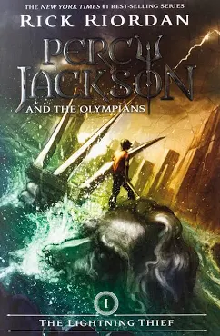
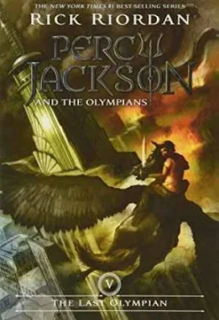
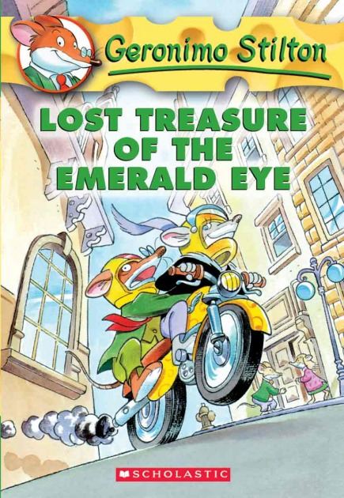
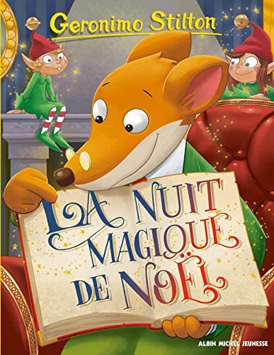
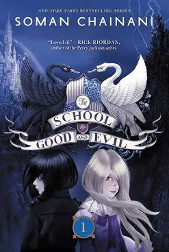
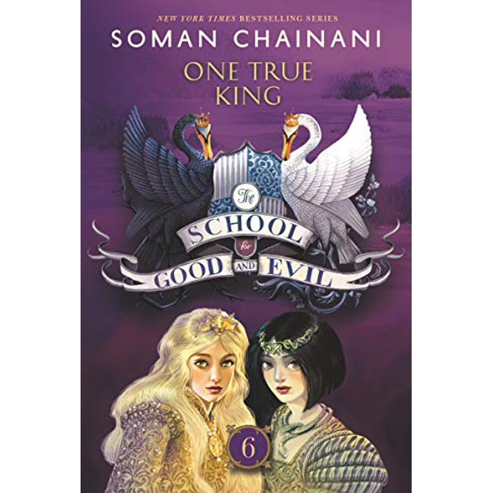
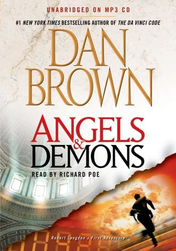
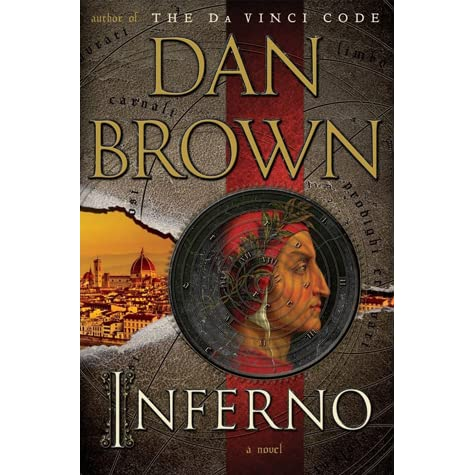

| Books | Summary |
|---|---|
First Book Of Percy Jackson  |
The Lightning Thief is a light-hearted fantasy about a modern 12-year-old boy who learns that his true father is Poseidon, the Greek god of the sea. Percy sets out to become a hero by undertaking a quest across the United States to find the entrance to the Underworld and stop a war between the gods. |
|
Newest Book Of Percy Jackson  |
It is the fifth and final installment in the Percy Jackson and the Olympians series. This conclusion to the saga revolves around Percy Jackson, the son of Poseidon, as he leads his friends in a last stand to protect Mount Olympus and the rest of the world from Kronos and his army of titans and monsters. |
|
First Book Of Geronimo Stilton  |
Stilton, Thea, cousin Trap and nephew Benjamin board a ship in search of buried treasure on a secret deserted island. The trip is filled with peril and plenty of humor, though the treasure isn't what anyone expected. |
|
Newest Book Of Geronimo Stilton  |
Its Christmas Eve in Sourisia! Everyone is absorbed in the final preparations for this great celebration. All, except Geronimo and Téa Stilton, remained at the office of the echo of the rodent to work. But two Santa Claus elves arrive to ask for their help! Let's go for a bewildering trip to the North Pole... where a bad surprise awaits them: the toy factory has closed and Santa Claus himself has gone on vacation... Quick, we have to save our minds of Christmas ! |
|
First Book Of The School For Good And Evil  |
The School for Good and Evil is a 2013 novel written by Soman Chainani. It is a tale in which best friends Sophie and Agatha are about to discover where all the lost children go: the fabled School for Good and Evil, where ordinary boys and girls are trained to be fairy-tale heroes and villains. |
|
Newest Book Of The School For Good And Evil  |
The final novel of The School for Good and Evil series and set after the events of A Crystal of Time, the book details Tedros', son of King Arthur, fight to become King of Camelot and prevent Japeth, who is impersonating his brother, from becoming the "One True King". |
|
First Book Of Robert Langdon Series  |
Dan Brown's "Angels and Demons” focuses on Robert Langdon, a symbologist and expert on a secret society called the Illuminati, who is asked to investigate the murder of a scientist, Leonardo Vetra. The murder seems to be connected to the Illuminati, but Langdon has his doubts. |
|
Newest Book Of Robert Langdon Series  |
Image result for inferno review book When a leather-clad assassin storms the hospital, Langdon is forced to flee with the beautiful doctor Sienna Brooks. Running from the assassin as well as the police, Langdon and Brooks are drawn into a devious plot that centers on one of the world's most mysterious literary masterpieces, Dante's Inferno. |
Book Buddy is a website that holds over 3 books. It offers the information you will need to find the book, and will be very, very, useful. The buying page is filtered, so you can easily find a book that you would like to read. You can easily scroll throught a lot of books, and quickly find the perfect one for you. Please visit our buying interface or our FAQ .